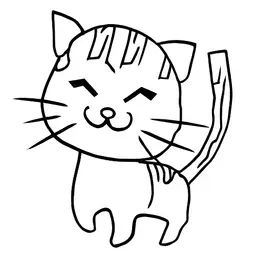
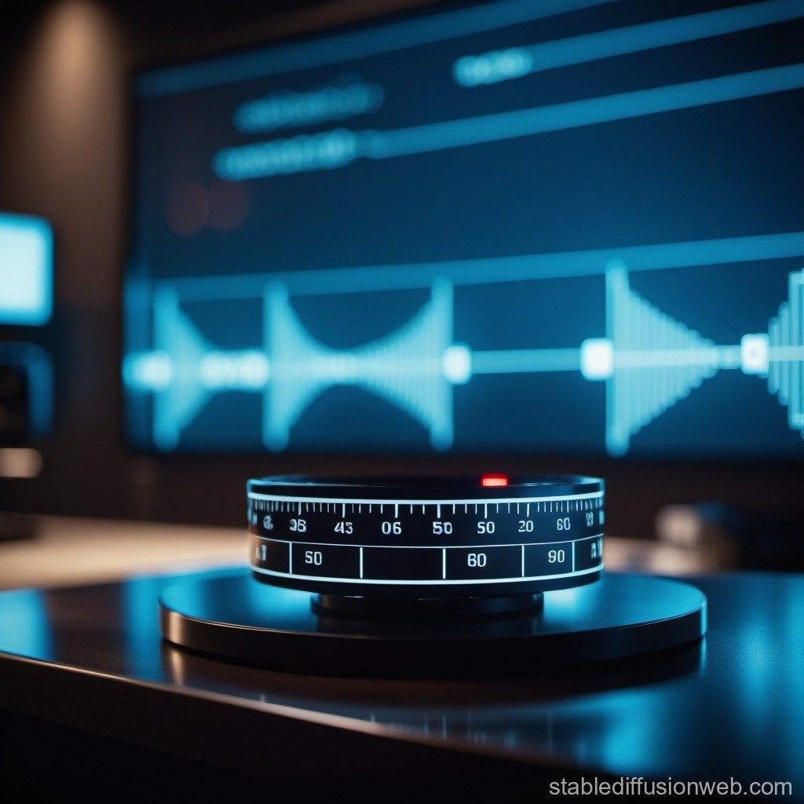

Estilo
Ninguno
Cinémico

Película analógica
Anime
Libro cómico
Arcilla artesanal
Arte De Fantasía

Arte de línea
Ciberpunk
Fotográfico
Arte pixelada
Pintada
Relación de aspecto
1:1
Número de imágenes
1
2
4
Escala de Guía
7
Usar Semilla Fija
La imagen estará disponible durante 7 días. Descárgala pronto.
